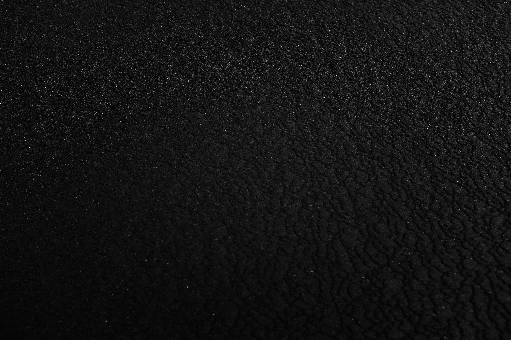
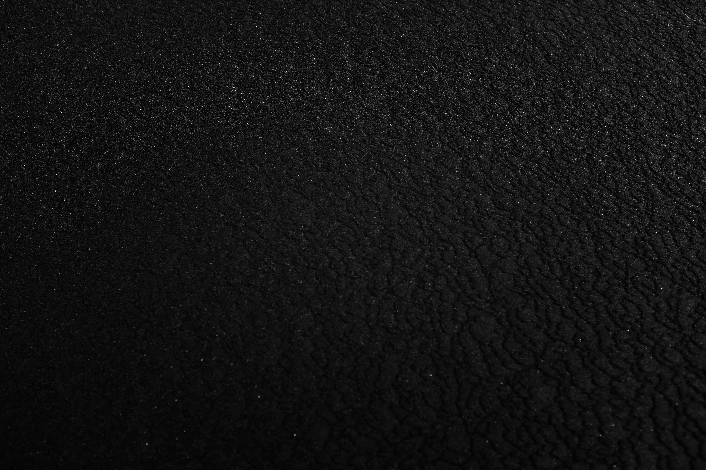

¿Qué es el circulo cromatico?
El círculo cromático es un instrumento en el que los colores se organizan y segmentan circularmente, en base a su tono o matiz. Facilita la toma de decisiones para conformar paletas cromáticas armonizadas, en otras palabras, te ayuda a identificar combinaciones “correctas”, a partir de un modelo visual de fácil uso y comprensión.

¿Cómo se conforma?
Colores primarios
Rojo, amarillo y azul. Constituyen los colores que no se pueden obtener a partir de la combinación de otros pigmentos.


Colores secundarios
Verde, naranja y violeta. Se obtienen al mezclar dos colores primarios en partes iguales.

Colores terciarios
Brindan las alternativas más interesantes, pues al emanar de la mezcla de colores primarios y secundarios adquieren sutileza y complejidad. Sus combinaciones son prácticamente infinitas
Se clasifican en:
- Colores Fríos
- Colores Calídos
El círculo cromático se parte en dos, estableciendo la división entre lo que hemos clasificado como colores cálidos y colores fríos; una división que se alimenta de factores subjetivos como las emociones e incluso factores del entorno físico, como la luz o el clima.
Colores Fríos
Van del morado al verde, pasando por la gama de azules. Se asocian a entornos naturales como el mar o el bosque y de ahí su poder para inducir sensaciones de paz.


Colores Cálidos
Habitan en la mitad del círculo cromático que va del rosa al amarillo; incluyendo anaranjados y rojos. Son colores vivaces, asociados al calor y al fuego, que transmiten movimiento e incitan a la acción.
Colores neutros
Un color neutro se define como un color de una saturación muy baja. Cuando aclaramos un color oscuro u oscurecemos uno claro, obtenemos un tono neutro que sin embargo, mantiene un matiz del color original. Se incluyen dentro del grupo de colores neutros al blanco, el negro y toda la gama de grises también llamados colores acromáticos. También se suman los tonos naturales: cremas, beige, marrones, tierras
 
